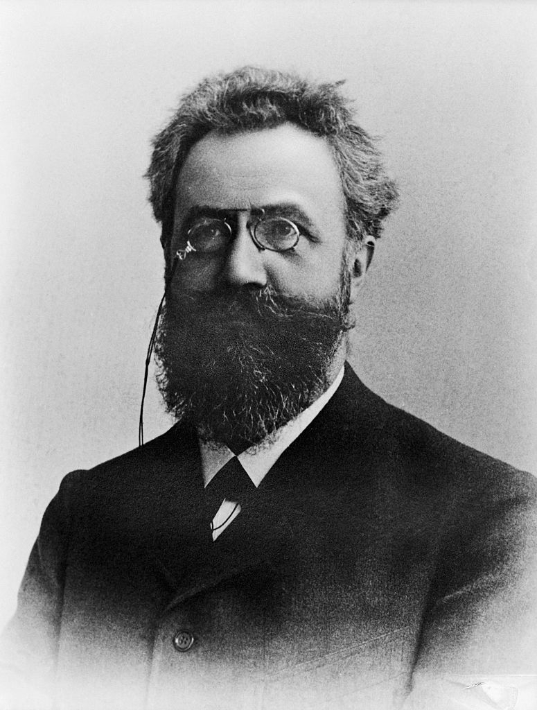

Unutish egri chizig'i: nega bir kunda yodlash ishlamaydi
140 yil oldin bir nemis olimi o'zini sinab ko'rib, xotiraning eng muhim qonunlaridan birini kashf qildi. U bugun ham ishlaydi.

1885-yilda nemis psixologi Hermann Ebbinghaus g'alati tajriba o'tkazdi: u o'ziga ma'nosiz bo'g'inlar ro'yxatini (masalan, “DAX”, “BOK”) yodladi va keyin ularni qancha vaqtda unutishini o'lchab bordi. Natija — “unutish egri chizig'i”: yangi o'rganilgan ma'lumot dastlabki soatlar va kunlarda juda tez yo'qoladi, keyin esa sekinlashadi.

Yechim — oraliq bilan takrorlash
Ebbinghaus yana bir narsani payqadi: takrorlashlar vaqtga taqsimlansa, xotira ancha mustahkam bo'ladi. Bu “spacing effect” (oraliq effekti) deb ataladi va psixologiyadagi eng ko'p tasdiqlangan topilmalardan biri.
2006-yilda Nikolas Sepeda va hamkasblari bu mavzudagi tadqiqotlarni jamladi: 184 ta maqoladagi 317 ta tajriba. Xulosa: oraliq bilan o'qish bir martada “siqib” o'qishdan yaxshiroq natija beradi. Bundan tashqari, ma'lumotni qancha uzoq eslab qolish kerak bo'lsa, takrorlashlar orasidagi oraliq ham shuncha uzunroq bo'lishi kerak.
Bir kecha 5 soat o'qigandan ko'ra, 5 kun davomida 1 soatdan o'qigan yaxshi.
Amalda qanday qilinadi?
- Bugun o'rganing, ertaga takrorlang. Birinchi takrorlash eng muhimi — unutish eng tez boshlanadigan payt.
- Oraliqni asta uzaytiring. 1 kun, 3 kun, 1 hafta, 2 hafta.
- Takrorlashda o'zingizni tekshiring. Qayta o'qimang — kitobni yopib, eslab ko'ring.
- Kartochka ilovasidan foydalaning. Anki yoki Quizlet takrorlash vaqtini o'zi hisoblaydi.
Saytdagi lug'at bo'limi va kartochka ilovalari (masalan, Anki) aynan shu tamoyilga qurilgan: so'z unutilishiga yaqin qolganda yana ko'rsatiladi.
Manba: Ebbinghaus, Über das Gedächtnis, 1885; Cepeda, Pashler, Vul, Wixted & Rohrer, “Distributed practice in verbal recall tasks”, Psychological Bulletin, 2006. Matn — o'zbek tilidagi erkin qisqacha bayon.